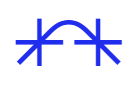

Locomotive
Scroll
Version (5.0)
Version (5.0)

Version (5.0)
Built on top of Lenis
Latest stable release with improved touch handling and performance fixes. No more greedy
CSS transforms!
TypeScript First
Fully typed. Better autocomplete, fewer bugs, happier developers.
Dual Intersection Observers
Separate observers for simple triggers vs. continuous animations. No wasted RAF cycles.
Smart Touch Detection
Parallax auto-disabled on mobile. Opt-in with one attribute.
Production Ready
Accessible by default. Native scrollbar, keyboard nav, and proper cleanup for SPAs.
Lightweight
Only 9.4kB gzipped
Built-in Tools
01
In View Detection
Add classes, trigger callbacks, or fire custom events when elements enter the viewport. Built on Intersection Observer for native performance.
02
Progress Tracking
Get real-time scroll progress (0-1) as CSS variables or JavaScript events. Perfect for progress bars, scroll-driven animations, or custom interactions.